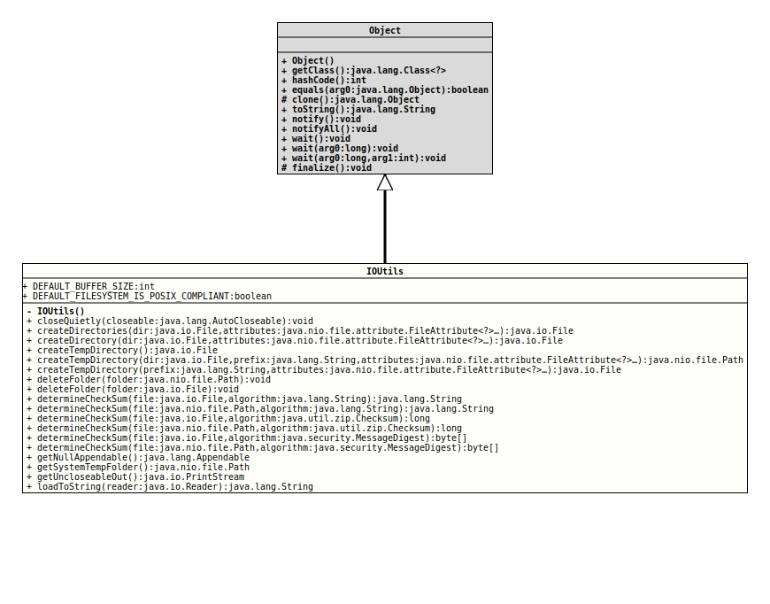

- Author:
- Thomas Thrien (thomas.thrien@tquadrat.org)
- Version:
- $Id: IOUtils.java 1045 2023-02-07 23:09:17Z tquadrat $
- Since:
- 0.0.5
- UML Diagram
-

UML Diagram for "org.tquadrat.foundation.util.IOUtils"
{kind=link}
-
Nested Class Summary
Nested ClassesModifier and TypeClassDescriptionstatic classThis implementation of anAppendablejust swallows any data that is written to it, like the/dev/nulldevice of a Unix or Linux machine, orNUL:on Windows.private static final classThe default file attributes. -
Field Summary
FieldsModifier and TypeFieldDescriptionstatic final intSome methods in this class need a buffer; the size of this buffer is defined here: 8192.static final booleanThe flag that indicates if the default file systems is POSIX compliant. -
Constructor Summary
Constructors -
Method Summary
Modifier and TypeMethodDescriptionstatic final voidcloseQuietly(AutoCloseable closeable) Unconditionally closes an object instance of a class that implements the interfaceAutoCloseable.
Equivalent toAutoCloseable.close(), except any exceptions will be ignored.static final FilecreateDirectories(File dir, FileAttribute<?>... attributes) Creates a directory by creating all nonexistent parent directories first.static FilecreateDirectory(File dir, FileAttribute<?>... attributes) Creates a new directory.static FileCreates a directory named after the account name of the current user in the defaulttempfolder, determined by the system property "java.io.tmpdir".
The access rights are set for the current user only (for UNIX, it would be 700).
The new directory will not be removed automatically after program termination.
The classFileprovides a static methodcreateTempFile()that creates a temporary file in the default temporary folder.static PathcreateTempDirectory(File dir, String prefix, FileAttribute<?>... attributes) Creates a new directory in the specified directory, using the given prefix to generate its name.
The details as to how the name of the directory is constructed is implementation dependent and therefore not specified.static FilecreateTempDirectory(String prefix, FileAttribute<?>... attributes) Creates a new directory in the default temporary-file directory, using the given prefix to generate its name.
This method works in exactly the manner specified bycreateTempDirectory(File,String,FileAttribute[])method for the case that thedirparameter is the temporary-file directory.static final voiddeleteFolder(File folder) Deletes the folder (or file) that is determined by the givenFile. instance.static final voiddeleteFolder(Path folder) Deletes the folder (or file) that is determined by the givenPathinstance.static final StringdetermineCheckSum(File file, String algorithm) Calculates the check sum for the given file, using the algorithm with the given name.static final byte[]determineCheckSum(File file, MessageDigest algorithm) Calculates the check sum for the given file, using the providedMessageDigest.static final longdetermineCheckSum(File file, Checksum algorithm) Calculates the check sum for the given file, using provided check sum algorithm implementation.static final StringdetermineCheckSum(Path file, String algorithm) Calculates the check sum for the given file, using the algorithm with the given name.static final byte[]determineCheckSum(Path file, MessageDigest algorithm) Calculates the check sum for the given file, using the providedMessageDigest.static final longdetermineCheckSum(Path file, Checksum algorithm) Calculates the check sum for the given file, using provided check sum algorithm implementation.static final AppendableReturns anAppendablethat just swallows any data that is written to it, like the/dev/nulldevice of a Unix or Linux machine, orNUL:on Windows.static final PrintStreamReturnsSystem.outwith a non-functionalOutputStream.close()method.static final StringloadToString(Reader reader)
-
Field Details
-
DEFAULT_BUFFER_SIZE
Some methods in this class need a buffer; the size of this buffer is defined here: 8192.- See Also:
-
DEFAULT_FILESYSTEM_IS_POSIX_COMPLIANT
@API(status=STABLE, since="0.0.6") public static final boolean DEFAULT_FILESYSTEM_IS_POSIX_COMPLIANTThe flag that indicates if the default file systems is POSIX compliant.- Since:
- 0.0.6
-
-
Constructor Details
-
IOUtils
private IOUtils()No instance allowed for this class.
-
-
Method Details
-
closeQuietly
Unconditionally closes an object instance of a class that implements the interfaceAutoCloseable.
Equivalent toAutoCloseable.close(), except any exceptions will be ignored. This is typically used infinallyblocks.
Even after the introduction oftry-with-resourceswith Java 7, this method can be still helpful.- Parameters:
closeable- TheAutoCloseableinstance to close, can benullor already closed.
-
createDirectories
@API(status=STABLE, since="0.0.6") public static final File createDirectories(File dir, FileAttribute<?>... attributes) throws IOException Creates a directory by creating all nonexistent parent directories first. Unlike thecreateDirectory(File,FileAttribute...)method, an exception is not thrown if the directory could not be created because it already exists.
Theattributesparameter is optional to set file-attributes atomically when creating the non-existent directories. Each file attribute is identified by its name. If more than one attribute of the same name is included in the array then all but the last occurrence is ignored.
If this method fails, then it may do so after creating some, but not all, of the parent directories.- Parameters:
dir- The directory to create.attributes- An optional list of file attributes to set atomically when creating the directory.- Returns:
- The directory.
- Throws:
UnsupportedOperationException- The attributes array contains an attribute that cannot be set atomically when creating the directory.FileAlreadyExistsException- Thedirexists but is not a directory (optional specific exception).IOException- An I/O error occurred.SecurityException- In the case a security manager is installed, thecheckWrite()method is invoked prior to attempting to create a directory and itscheckRead()is invoked for each parent directory that is checked. Ifdiris not an absolute path then itsFile.getAbsoluteFile()method may need to be invoked to get its absolute path. This may invoke the security manager'scheckPropertyAccess()method to check access to the system propertyuser.dir.- Since:
- 0.0.6
- See Also:
-
createDirectory
@API(status=STABLE, since="0.0.6") public static File createDirectory(File dir, FileAttribute<?>... attributes) throws IOException Creates a new directory. The check for the existence of the file and the creation of the directory if it does not exist are a single operation that is atomic with respect to all other filesystem activities that might affect the directory. ThecreateDirectories()method should be used where it is required to create all nonexistent parent directories first.
Theattributesparameter is optional to set file-attributes atomically when creating the directory. Each attribute is identified by its name. If more than one attribute of the same name is included in the array then all but the last occurrence is ignored.- Parameters:
dir- The directory to create.attributes- An optional list of file attributes to set atomically when creating the directory- Returns:
- The directory.
- Throws:
UnsupportedOperationException- The attributes array contains an attribute that cannot be set atomically when creating the directory.FileAlreadyExistsException- A directory could not otherwise be created because a file of that name already exists (optional specific exception).IOException- An I/O error occurred or the parent directory does not exist.SecurityException- In the case a security manager is installed, thecheckWrite()method is invoked to check write access to the new directory.- Since:
- 0.0.6
-
createTempDirectory
Creates a directory named after the account name of the current user in the defaulttempfolder, determined by the system property "java.io.tmpdir".
The access rights are set for the current user only (for UNIX, it would be 700).
The new directory will not be removed automatically after program termination.
The classFileprovides a static methodcreateTempFile()that creates a temporary file in the default temporary folder. As this may be not a problem on a single-user Windows system with default configuration, it will cause security problems on UNIX-like systems. Therefore, it is recommended, to useFile.createTempFile(String, String, File)instead, like this:
This will guarantee that the temporary files cannot be read by other users.File tempFile = File.createTempFile( "PREFIX", "EXT", createTempDirectory() );- Returns:
- The new temporary directory; it is guaranteed that the directory exists after the call to this method returned.
- Throws:
IOException- Something has gone wrong.- Since:
- 0.0.6
-
createTempDirectory
@API(status=STABLE, since="0.0.6") public static Path createTempDirectory(File dir, String prefix, FileAttribute<?>... attributes) throws IOException Creates a new directory in the specified directory, using the given prefix to generate its name.
The details as to how the name of the directory is constructed is implementation dependent and therefore not specified. Where possible theprefixis used to construct candidate names.
Theattributesparameter is optional to set file-attributes atomically when creating the directory. Each attribute is identified by its name. If more than one attribute of the same name is included in the array then all but the last occurrence is ignored.- Parameters:
dir- The directory in which to create the temporary directory.prefix- The prefix string to be used in generating the directory's name; may benull.attributes- An optional list of file attributes to set atomically when creating the directory.- Returns:
- The path to the newly created directory that did not exist before this method was invoked.
- Throws:
IllegalArgumentException- The prefix cannot be used to generate a candidate directory name.UnsupportedOperationException- The attributes array contains an attribute that cannot be set atomically when creating the directory.IOException- An I/O error occurs ordirdoes not exist.SecurityException- In the case a security manager is installed, thecheckWrite()method is invoked to check write access when creating the directory.- Since:
- 0.0.6
- See Also:
-
createTempDirectory
@API(status=STABLE, since="0.0.6") public static File createTempDirectory(String prefix, FileAttribute<?>... attributes) throws IOException Creates a new directory in the default temporary-file directory, using the given prefix to generate its name.
This method works in exactly the manner specified bycreateTempDirectory(File,String,FileAttribute[])method for the case that thedirparameter is the temporary-file directory.- Parameters:
prefix- The prefix string to be used in generating the directory's name; may benull.attributes- An optional list of file attributes to set atomically when creating the directory.- Returns:
- The
Fileinstance to the newly created directory that did not exist before this method was invoked. - Throws:
IllegalArgumentException- The prefix cannot be used to generate a candidate directory name.UnsupportedOperationException- Theattributesarray contains an attribute that cannot be set atomically when creating the directory.IOException- An I/O error occurred or the temporary-file directory does not exist.SecurityException- In the case a security manager is installed, thecheckWrite()method is invoked to check write access when creating the directory.- Since:
- 0.0.6
- See Also:
-
deleteFolder
Deletes the folder (or file) that is determined by the given
Pathinstance. If the argument denotes a directory, the method will remove its contents first, recursively.- Parameters:
folder- The folder to remove; despite the name of the argument and the method, this can be also a plain file.- Throws:
IOException- A problem occurred when deleting thePath.
-
deleteFolder
Deletes the folder (or file) that is determined by the given
File. instance. If the argument denotes a directory, the method will remove its contents first, recursively.Calls
deleteFolder(Path)internally.- Parameters:
folder- The folder to remove; despite the name of the argument and the method, this can be also a plain file.- Throws:
IOException- A problem occurred when deleting thePath.
-
determineCheckSum
@API(status=STABLE, since="0.0.5") public static final String determineCheckSum(File file, String algorithm) throws IOException, NoSuchAlgorithmException Calculates the check sum for the given file, using the algorithm with the given name.
If the name is one of
- CRC32
- Adler32
the method uses
CRC32orAdler32for the calculation, any other name is taken as the name for a MessageDigest; all JVMs know- MD5
- SHA1
others can be added by installing additional security providers.
This method calls
determineCheckSum(Path, String)internally.- Parameters:
file- The file to process.algorithm- The name for the algorithm to use for the check sum calculation.- Returns:
- The check sum as a hex string.
- Throws:
IOException- Problems to process the file.NoSuchAlgorithmException- The provided algorithm does not exist or the provider for it is not installed properly.
-
determineCheckSum
@API(status=STABLE, since="0.0.5") public static final String determineCheckSum(Path file, String algorithm) throws IOException, NoSuchAlgorithmException Calculates the check sum for the given file, using the algorithm with the given name.
If the name is one of
- CRC32
- Adler32
the method uses
CRC32orAdler32for the calculation, any other name is taken as the name for a MessageDigest; all JVMs know- MD5
- SHA1
others can be added by installing additional security providers.
- Parameters:
file- The file to process.algorithm- The name for the algorithm to use for the check sum calculation.- Returns:
- The check sum as a hex string.
- Throws:
IOException- Problems to process the file.NoSuchAlgorithmException- The provided algorithm does not exist or the provider for it is not installed properly.
-
determineCheckSum
@API(status=STABLE, since="0.0.5") public static final long determineCheckSum(File file, Checksum algorithm) throws IOException Calculates the check sum for the given file, using provided check sum algorithm implementation.- Parameters:
file- The file to process.algorithm- The check sum algorithm to use for the check sum calculation.- Returns:
- The check sum.
- Throws:
IOException- Problems to process the file.
-
determineCheckSum
@API(status=STABLE, since="0.0.5") public static final long determineCheckSum(Path file, Checksum algorithm) throws IOException Calculates the check sum for the given file, using provided check sum algorithm implementation.- Parameters:
file- The file to process.algorithm- The check sum algorithm to use for the check sum calculation.- Returns:
- The check sum.
- Throws:
IOException- Problems to process the file.
-
determineCheckSum
@API(status=STABLE, since="0.0.5") public static final byte[] determineCheckSum(File file, MessageDigest algorithm) throws IOException Calculates the check sum for the given file, using the providedMessageDigest.- Parameters:
file- The file to process.algorithm- TheMessageDigestto use for the check sum calculation.- Returns:
- The check sum as a byte array.
- Throws:
IOException- Problems to process the file.
-
determineCheckSum
@API(status=STABLE, since="0.0.5") public static final byte[] determineCheckSum(Path file, MessageDigest algorithm) throws IOException Calculates the check sum for the given file, using the providedMessageDigest.- Parameters:
file- The file to process.algorithm- TheMessageDigestto use for the check sum calculation.- Returns:
- The check sum as a byte array.
- Throws:
IOException- Problems to process the file.
-
getNullAppendable
Returns anAppendablethat just swallows any data that is written to it, like the/dev/nulldevice of a Unix or Linux machine, orNUL:on Windows.- Returns:
- A null appendable.
- See Also:
-
getUncloseableOut
Returns
System.outwith a non-functionalOutputStream.close()method.Assume the following scenario:
… Optional<File> outputFile = … … PrintStream outputStream = outputFile.isPresent() ? new PrintStream( new FileOutputStream( outputFile.get() ) ) : IOUtils.getUncloseableOut(); try( outputStream ) { /** * Print something ... */ … } …The output stream will be close at the end of the
tryblock; this is desired in case of aFileOutputStream, but totally not wanted if the output stream isSystem.out.- Returns:
System.outwithout theclose()method.
-
loadToString
@API(status=STABLE, since="0.0.5") public static final String loadToString(Reader reader) throws IOException Reads the complete content of the provided
Readerinto aString.Obviously this method is feasible only for files with a limited size.
- Parameters:
reader- TheReaderinstance.- Returns:
- The content of the provided
Reader. - Throws:
IOException- Problems on reading from theReader.
-